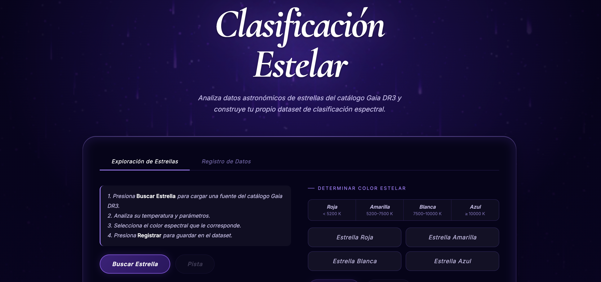

Crea tu propio
Dataset
Este módulo permite construir un conjunto de datos estelar a partir de reglas de clasificación astronómica. Las y los usuarios pueden trabajar con información de estrellas, aplicar criterios basados en temperatura y color, filtrar resultados y validar etiquetas.
